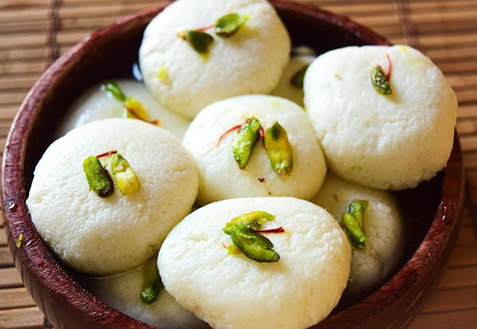

Rasgullas

Description
If you are intimidated by the idea of making rasgullas at home, please do not be any longer. I was too, until one day I tried it and realized I was worried for no reason all these years. They are quite easy and super quick to make. Give these a try.
Ingredients
- 6 cups milk
- 3 tablespoons fresh lime juice
- 2½ cups white sugar
- 6 cups water
- 1 teaspoon ground cardamom
Steps
- Bring the milk to a boil in a heavy-bottomed pan till it starts foaming; immediately add the lime juice and stir. It will curdle right away. You should see the milk solids (chenna) separate from the whey. Pour into a colander lined with cheesecloth; rinse the chenna with cold water to get rid of the lime juice. Allow the water to drain completely.
- Gather the muslin cloth edges like a parcel and express as much water as possible; what you now have is soft paneer. Turn the paneer onto a rolling mat or other smooth surface. Knead the paneer well to make a smooth paste. Roll into a ball and divide into 20 equal portions.
- Bring the water to a boil in a pressure cooker; stir the sugar into the boiling water until dissolved.
- Roll each portion of paneer into a smooth ball between your palms, making sure there are no cracks; gently drop the balls into the hot syrup. Secure the lid onto the pressure cooker and bring to pressure. Reduce heat to medium-low and pressure cook for 6 minutes.
- Release the pressure from the cooker while running under water; remove the lid. The rasgullas should be floating on the syrup and have expanded 2 or 3 times in size. Pour the rasgullas and syrup into a bowl. Gently stir the cardamom into the mixture. Refrigerate to chill completely before serving cold.